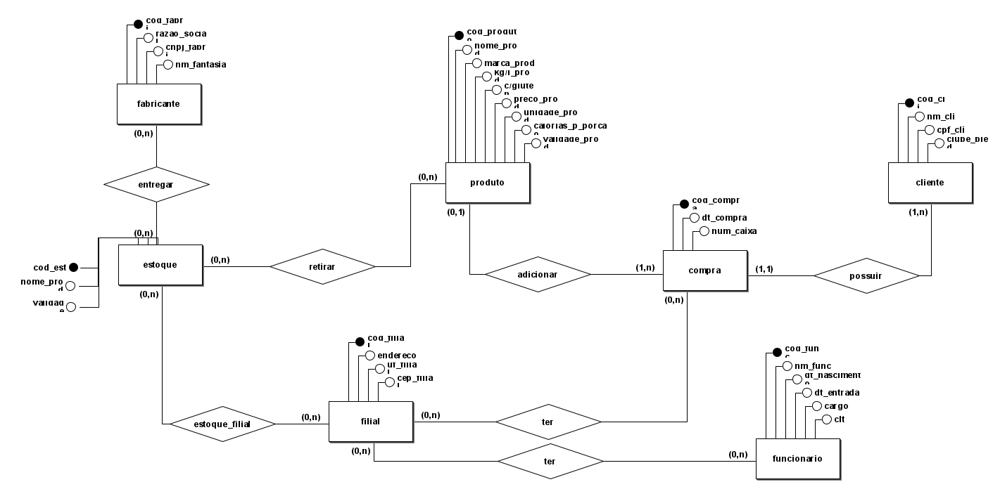
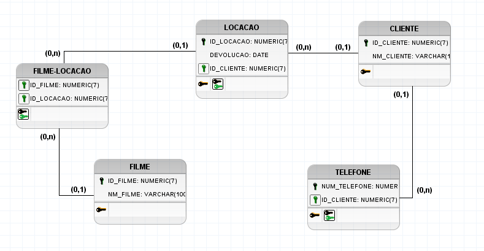

.svg)
Nossos Serviços
Bancos de Dados
Trabalhamos com bancos de dados robustos, como MySQL, PostgreSQL e SQL Server, garantindo eficiência e segurança no gerenciamento de informações. Utilizamos ferramentas como o Diagrama Entidade-Relacionamento (DER) e Dicionário de Dados para facilitar a comunicação e atender de forma clara às necessidades dos nossos clientes.
O que é um Banco de Dados?
Um banco de dados é um sistema de armazenamento e organização de dados de maneira estruturada, permitindo fácil acesso, gerenciamento e manipulação de grandes volumes de informações.
Banco de Dados Relacional
Banco de dados relacional é um modelo de banco de dados que armazena informações em tabelas inter-relacionadas. Exemplos incluem MySQL, PostgreSQL e Oracle.
Banco de Dados Não Relacional
Banco de dados não relacional, também conhecido como NoSQL, é um banco de dados que não utiliza tabelas relacionais. Exemplos incluem MongoDB, Cassandra e CouchDB.
O que é um Diagrama Conceitual DER?
O Diagrama Entidade-Relacionamento (DER) é uma ferramenta visual usada para representar as entidades, seus atributos e os relacionamentos entre elas no modelo de dados.
O que é um Diagrama Lógico MER?
O Modelo Entidade-Relacionamento (MER) é um modelo lógico que detalha as entidades e seus relacionamentos, baseado no modelo conceitual, mas com mais detalhes técnicos para implementação.
Diagrama DER do Exercício
Apresentamos aqui o Diagrama Entidade-Relacionamento (DER) do exercício, que ilustra como as entidades estão conectadas entre si.
Diagrama MER do Exercício
O Diagrama Lógico MER detalha ainda mais os relacionamentos, características e especificações dos dados de maneira técnica.
Quais os Bancos de Dados que a Empresa Trabalha?
A Kads Sistemas trabalha com uma variedade de bancos de dados, incluindo:
- MySQL
- PostgreSQL
- SQL Server
- MongoDB
O que é Dicionário de Dados?
O Dicionário de Dados é um repositório que armazena a descrição das estruturas de dados, incluindo tabelas, campos, relacionamentos e regras de negócio, oferecendo uma visão clara de como os dados são organizados e utilizados.
Servidor FTP
O que é um servidor FTP?
Um servidor FTP (File Transfer Protocol) é um sistema que permite a transferência de arquivos entre computadores através da internet ou de uma rede local.
Funcionalidades em uma rede
As principais funcionalidades incluem a troca de arquivos, a possibilidade de fazer upload e download de documentos e a gestão de permissões de usuários.
Razões para uso no passado
FTP foi amplamente utilizado devido à sua facilidade de uso e suporte a grandes transferências de dados, embora apresentasse limitações como falta de segurança para dados sensíveis.
Diferenças com Armazenamento em Nuvem
Enquanto o FTP é focado na transferência de arquivos, serviços em nuvem como Google Drive e OneDrive oferecem armazenamento, colaboração em tempo real e acesso via interface web, além de segurança avançada.
Servidor de E-mail
O que é?
Um servidor de e-mail é responsável por enviar, receber e armazenar e-mails, facilitando a comunicação digital entre usuários.
Protocolos SMTP, POP3 e IMAP
SMTP (Simple Mail Transfer Protocol) é utilizado para enviar e-mails, enquanto POP3 (Post Office Protocol) e IMAP (Internet Message Access Protocol) são usados para recuperar e gerenciar e-mails armazenados no servidor.
Portas de Comunicação
As portas comuns utilizadas por esses protocolos são:
- Porta 25: Usada pelo SMTP para envio de e-mails.
- Porta 110: Usada pelo POP3 para recuperação de e-mails.
- Porta 143: Usada pelo IMAP para acesso e gerenciamento de e-mails.